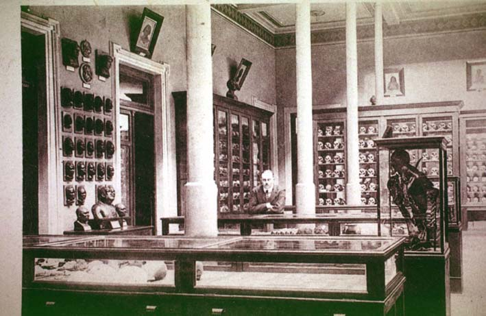

|
|  |
|
Sección antropológica, Museo de La Plata, postcard
|
While the historical relic, then, is imbued with a spiritual value that supposedly stays intact across time and binds the national community together, the opposite seems to occur with its 'prehistorical' counterpart: the ethnographic fragment. Indigenous material culture was excluded from Carranza's Museum and from the discourse of national history its array of objects underpinned. Instead, it was inserted into the series of 'natural history' that was being constructed parallely at Francisco P. Moreno's Museum of La Plata, where Amerindian textiles, pottery, and human remains were displayed together with fossils, animal skeletons, minerals and stuffed birds and mammals. Argentina's human prehistory, it was implied, occupied a place in cultural evolution analogous to that of palaeontological against contemporary nature: a 'stage' of development superseded by progress, extinguished in the 'struggle for life' by a process of 'natural selection'.
|